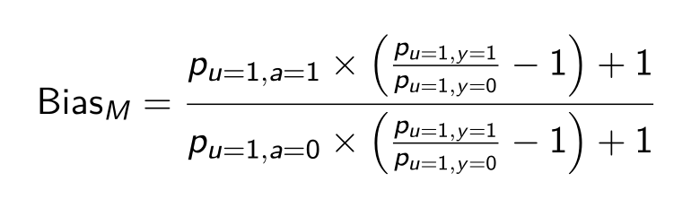

hdPS and its machine learning extensions in residual confounding control

Background
The use of retrospective health care claims datasets is frequently criticized for lacking complete information on potential confounders. Ultimately, the treatment effects estimated utilizing such data sources may be subject to residual confounding. Digital electronic administrative records routinely collect a large volume of health-related information; and many of whom are usually not considered in conventional pharmacoepidemiological studies.
Proposal to reduce residual confounding bias
In 2009, a high-dimensional propensity score (hdPS) algorithm was proposed that utilizes such information as surrogates or proxies for mismeasured and unobserved confounders in an effort to reduce residual confounding bias. Since then, many machine learning and semi-parametric extensions of this algorithm have been proposed to exploit the wealth of high-dimensional proxy information properly.
Schneeweiss et al. (2009)
Purpose of the workshop
This workshop will
- demonstrate logic, steps and implementation guidelines of hdPS utilizing an open data source as an example (using reproducible R codes),
- familiarize participants with the difference between propensity score vs. hdPS,
- explain the rationale for using the machine learning extensions of hdPS, and their statistical properties, and
- discuss advantages, controversies, and hdPS reporting guidelines while writing a manuscript.
Workshop prerequisite
Attendees should have prerequisite knowledge of multiple regression analysis and working knowledge in R (e.g., basic data manipulation and regression fitting).
Version history
Different versions and updates of the materials were presented in the following sessions
- Statistical issues in administrative data, Banff International Research Station, Banff, Feb 2019.
- Statistics Conference in Genomics, Pharmaceutical Science, and Health Data Science, August 15-17, 2022 University of Victoria, Victoria, BC
- Work in Progress Seminar, CHEOS, St. Paul’s Hospital (Hurlburt Auditorium), Dec 14th, 2022.
- Statistics and Biostatistics seminar series, at the Department of Statistics and Actuarial Science, University of Waterloo, April 26, 2023.
- 2023 Society of Epidemiologic Research Workshops, Virtual, May 4, 2023
- Conference on Statistics and Data Science with Applications in Biology, Genetics, Public Health, and Finance, Thompson Rivers University, Kamloops, August 21-24, 2023 (upcoming/scheduled).
Citation
Karim, ME. (2023, May 4). High-dimensional propensity score and its machine learning extensions in residual confounding control in pharmacoepidemiologic studies. Site/DOI number to be added.
Comments
For any comments regarding this document, reach out to me.